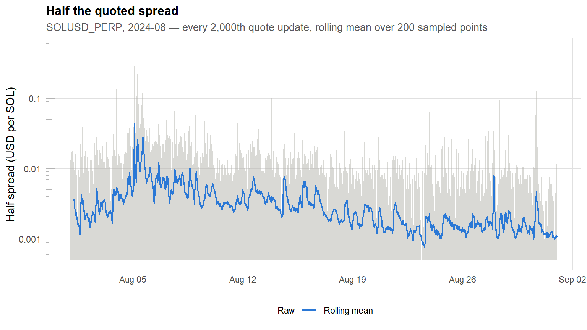
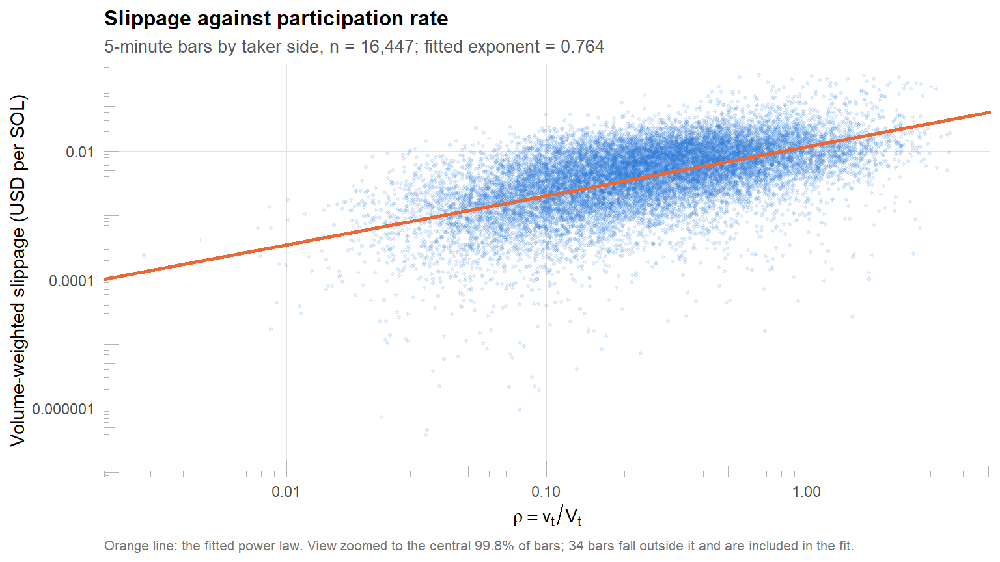
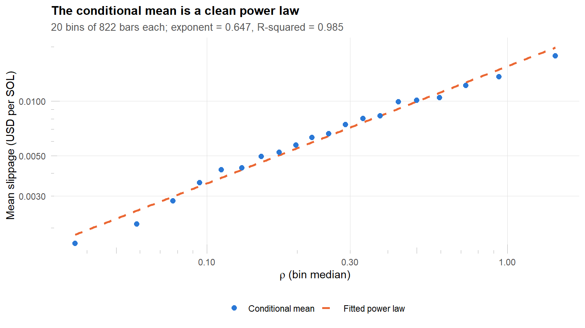
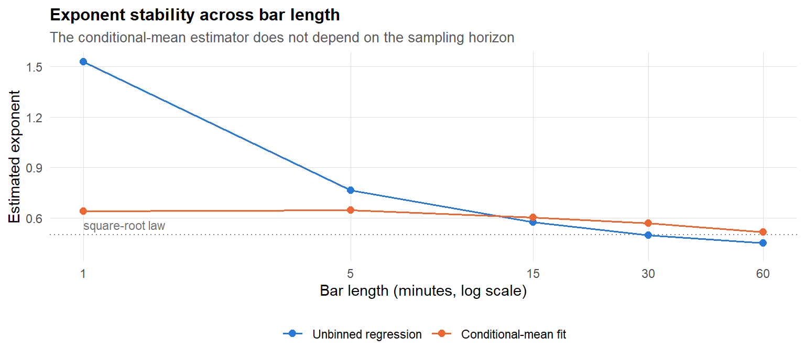
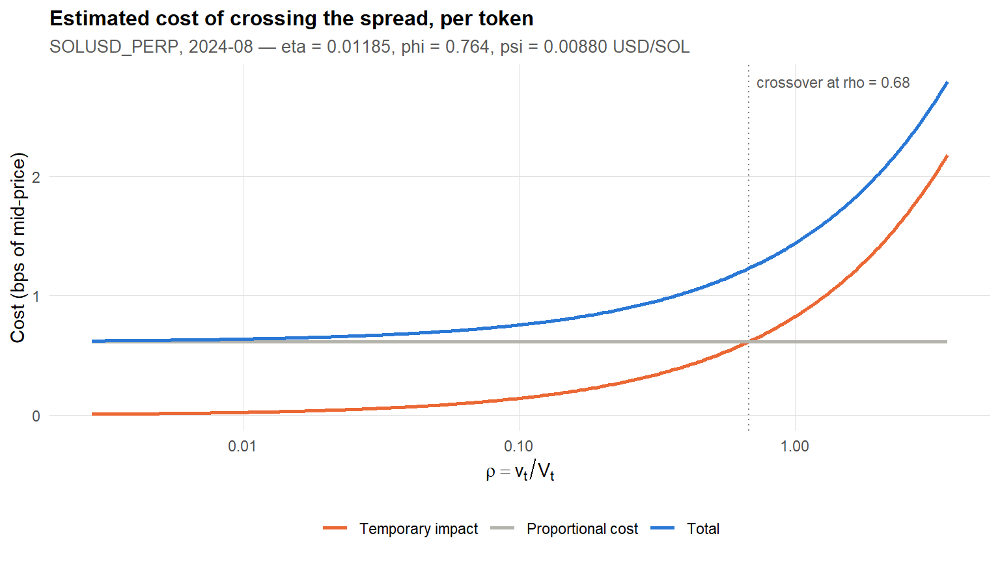

SYMBOL <-"SOLUSD_PERP"MONTH <-"2024-08"# estimation sampleWARMUP <-"2024-07"# read for daily volume only, to warm up the trailing ADVBAR_MINUTES <-5# bar length over which the participation rate is definedADV_WINDOW <-10# trailing days in the average-daily-volume estimate of V_tVOL_WINDOW <-15# bars in the rolling volatility estimate used for filteringTRIM_Q <-0.95# drop the top 5% of rolling volatility and of bar volumeN_BINS <-20# participation-rate quantile bins for the conditional mean
Introduction
In the Almgren–Chriss framework the market volume process is \(V_t\), and a trader executing at rate \(v_t\) pays, per base asset transacted at time \(t\),
\[
S_t + g\!\left(\frac{v_t}{V_t}\right),
\]
where \(S_t\) is the mid-price. If the trader buys the trading price is above the mid-price; if she sells it is below. Writing \(\rho = v_t / V_t\) for the participation rate, the price paid per token is
Rather than working with \(g\) directly it is convenient to use the execution cost function\(L(\rho) = \rho\, g(\rho)\), which measures cost per unit time rather than per unit traded. If \(X_t\) is the trader’s cash account process, then
The proportional term \(\psi|\rho|\) is linear, and is the per-token add-on: a constant mark-up or mark-down paid on every asset traded, no matter how fast or slow the trader goes. It is a fixed transaction cost — the effective spread, the venue fee, and any taxes or similar charges — not a liquidity cost.
The super-linear term \(\eta|\rho|^{1+\phi}\) models temporary market impact. When a trader trades faster she consumes more liquidity and the price moves against her own trading pressure. This is the term that makes the optimal execution problem non-trivial, and estimating its two parameters is the main work of this notebook.
This notebook estimates \(\psi\), \(\eta\) and \(\phi\) from one month of Binance SOLUSD_PERP perpetual futures data. It is the companion to ../market_impact/estimation_of_market_impact.qmd, which estimates the permanent impact coefficient \(k\) from the same data; together the two parameterise the trading-curve problem.
What each parameter is measured against
The two cost terms are separated by choosing the right price benchmark, and getting this right is what makes the estimation work at all:
Parameter
Measured from
Measured to
Interpretation
\(\psi\)
mid-price
best bid/ask
half the quoted spread: the cost of crossing, paid even by an infinitesimally small order
\(\eta,\ \phi\)
best bid/ask
realised price
slippage: the cost of walking the book beyond the touch
Measuring slippage from the touch rather than from the mid is what stops the two terms absorbing one another. An order that fills entirely at the best quote has zero slippage by construction and contributes only \(\psi\).
Data
Sources
Two tick-level Binance feeds for SOLUSD_PERP, 2024-08:
trades — individual executions. Each row is a fill, carrying price, base_qty (size in SOL), millisecond time, and is_buyer_maker, which signs the taker side: is_buyer_maker == TRUE means the taker was selling into the bid; FALSE means the taker was buying from the ask.
bookTicker — best bid/ask snapshots, from which the mid-price process and the spread are reconstructed. Only the three columns needed are read, since the raw file is several gigabytes.
Load trades and bookTicker
trades <-fread(sprintf("data/%s-trades-%s.csv", SYMBOL, MONTH))bookTicker <-fread(sprintf("data/%s-bookTicker-%s.csv", SYMBOL, MONTH),select =c("best_bid_price", "best_ask_price", "transaction_time"))trades[, ts :=as.POSIXct(time /1000, origin ="1970-01-01", tz ="UTC")]trades[, date :=as.Date(ts)]# is_buyer_maker == TRUE => the maker was the buyer => the TAKER sold.trades[, taker_buy :=!is_buyer_maker]bookTicker[, mid_price := (best_bid_price + best_ask_price) /2]bookTicker[, quoted_spread := best_ask_price - best_bid_price]# Half the quoted spread: what a marketable order concedes just by crossing.bookTicker[, half_spread := quoted_spread /2]bookTicker[, ts :=as.POSIXct(transaction_time /1000, origin ="1970-01-01", tz ="UTC")]setorder(trades, time, id)setorder(bookTicker, transaction_time)
The sample contains 7,923,220 fills and 74,641,633 quote updates spanning 2024-08-01 to 2024-08-31.
Attaching the prevailing quote
Each fill is matched to the last quote strictly before it. The strict inequality matters: a quote stamped at the same millisecond as the fill may already reflect that fill’s own consumption of the book, which would mechanically shrink the measured slippage toward zero.
Non-equi join of fills to the prevailing quote
setkey(bookTicker, transaction_time)trades[, pre_bid := bookTicker[trades, on = .(transaction_time < time), mult ="last", .(best_bid_price)]$best_bid_price]trades[, pre_ask := bookTicker[trades, on = .(transaction_time < time), mult ="last", .(best_ask_price)]$best_ask_price]trades[, pre_mid := (pre_bid + pre_ask) /2]
Plot the spread process
spread_plot <- bookTicker[seq(1, .N, by =2000)]spread_plot[, half_spread_ma :=rollmean(half_spread, k =200, fill =NA, align ="right")]ggplot(spread_plot, aes(x = ts)) +geom_line(aes(y = half_spread, colour ="Raw"), alpha =0.5, linewidth =0.25) +geom_line(aes(y = half_spread_ma, colour ="Rolling mean"), linewidth =0.6, na.rm =TRUE) +scale_colour_manual(values =c("Raw"= col_muted, "Rolling mean"= col_data)) +# Log scale: the series sits at the minimum tick for most of the month, so a# linear axis is entirely taken up by a handful of spikes.scale_y_log10(labels =label_number(drop0trailing =TRUE)) +annotation_logticks(sides ="l", colour ="grey70", linewidth =0.25) +labs(title ="Half the quoted spread",subtitle =sprintf("%s, %s — every 2,000th quote update, rolling mean over 200 sampled points", SYMBOL, MONTH),x =NULL, y ="Half spread (USD per SOL)" )

Figure 1: Half the quoted spread through the month. The instrument sits at the minimum tick almost all of the time; the visible excursions are the news and liquidation episodes that the filtering step below is designed to remove.
Reconstructing marketable orders
A single marketable order that sweeps several price levels is reported by the exchange as several fill rows sharing one millisecond timestamp. Treating those rows as separate trades destroys precisely the signal we are after: the first fragment executes at the touch with zero slippage, and only the later fragments show the concession. Fills are therefore aggregated into orders, and the order’s realised price is the size-weighted average of its fills,
where \(\text{ask}^{-}\) and \(\text{bid}^{-}\) are the quotes prevailing before the order’s first fill. Grouping is by timestamp and taker side rather than by timestamp alone: only 0.16% of timestamps contain both directions, but merging a buy with a sell would net opposing flow into a meaningless average price.
Figure 2: Order slippage relative to the touch. The bar at zero is not bad data — it is every order that filled entirely at the best quote, and it holds most of the sample.
69.5% of orders execute entirely at the best quote and so have exactly zero slippage, 26.8% pay a positive concession, and 3.7% are negative. The negative values are a measurement artifact rather than a free lunch: they arise when the book improves between the quote snapshot and the fill, or when hidden liquidity rests inside the spread.
NoteWhy the zeros are kept here but dropped later
Zero-slippage orders carry no information about the shape of \(g\), and in a log-log regression they cannot even be represented. But they are genuine zero-cost executions, and the quantity being modelled is the average cost of executing a given quantity. Discarding them before averaging would overstate the cost of every bar that contains one.
They are therefore retained inside the volume-weighted bar average and dropped only at the bar level, where they are rare. The alternative — dropping them first — is estimated and reported in the robustness table.
The proportional cost \(\psi\)
\(\psi\) is the per-token cost that does not depend on trading speed. It has two components:
The effective spread — the distance from the mid-price to the touch, which is half the quoted spread. This is directly measurable and is the part estimated here.
The venue fee. Fees are not embedded in the price field of the trades feed, so there is nothing in this data to estimate. The fee is a known constant for any given account tier and simply adds to \(\psi\).
The spread is size-weighted, since what matters for execution cost is the spread prevailing when volume actually trades, not the spread averaged over idle time.
The volume-weighted figure is an order of magnitude above the median because size arrives when the spread is wide. Since \(\psi\) is meant to price the cost actually paid, the volume-weighted estimate
is the one carried forward. It excludes fees, which on a typical taker tier are one to two orders of magnitude larger than the spread on this instrument.
The participation rate
Why the unit of analysis must be a bar
\(\rho = v_t / V_t\) is a ratio of two rates: the trader’s execution rate and the market’s volume rate, over the same horizon. A single order’s size divided by a whole day’s volume is not that ratio, and it produces \(\rho \approx 10^{-6}\) — five orders of magnitude below the participation rates any real execution schedule operates at. The section Why not estimate at the order level? shows empirically that the exponent is simply not identified at that scale.
The estimation is therefore run on 5-minute bars, split by taker side. Within a bar, one side’s takers are treated as a single trader executing a schedule: \(v\) is that side’s total volume and \(V\) is the market’s volume rate over the same window. This mirrors the bar construction used for permanent impact in the companion notebook.
The market volume rate \(V_t\)
\(V_t\) is a trailing 10-day average daily volume, lagged one day so that no part of the estimate uses information from the day it is applied to. The preceding month is read for its daily volumes only, so the trailing window is fully populated from the first day of the sample.
Trailing average daily volume
warmup <-fread(sprintf("data/%s-trades-%s.csv", SYMBOL, WARMUP),select =c("base_qty", "time"))warmup[, date :=as.Date(as.POSIXct(as.numeric(time) /1000,origin ="1970-01-01", tz ="UTC"))]daily_volume <-rbind( warmup[, .(volume =sum(base_qty)), by = date], trades[, .(volume =sum(base_qty)), by = date])[, .(volume =sum(volume)), by = date][order(date)]# Trailing mean, then lagged one day: strictly causal.daily_volume[, adv :=shift(rollapply(volume, ADV_WINDOW, mean,fill =NA, align ="right"), 1)]rm(warmup)invisible(gc())
Figure 3: Daily traded volume against the lagged trailing average that defines the market volume rate. The 5 August spike is the yen-carry unwind; the trailing average deliberately absorbs it slowly.
with \(q_j\) and \(s_j\) the size and slippage of order \(j\) and \(\Delta\) the bar length in minutes. The denominator of \(\rho\) scales the daily volume rate down to the bar, so \(\rho = 1\) means that side alone traded at the market’s own average rate.
Each order’s slippage is measured against its own arrival quote, so the bar average is free of the price drift that accumulates over the bar. That drift is permanent impact, and belongs to the companion notebook rather than here. The distinction is not academic: measuring each bar’s VWAP against the bar’s opening mid instead confounds the two, and the resulting cost comes out negative in 44% of bars — the drift over the bar simply swamps the impact signal.
Bar construction and filtering functions
make_bars <-function(ord, minutes, drop_zero_orders =FALSE) { d <-if (drop_zero_orders) ord[slippage !=0] else ord d <-copy(d)[, bin :=floor_date(ts, sprintf("%d minutes", minutes))]# Arrival mid of each bar, and the rolling volatility used for filtering. arrival <- d[, .(bar_mid =first(pre_mid)), by = bin][order(bin)] arrival[, sd_mid :=rollapply(bar_mid, VOL_WINDOW, sd, fill =NA, align ="right")] b <- d[, .(date =first(date),qty =sum(base_qty),n_orders = .N,slip_vw =sum(base_qty * slippage) /sum(base_qty) ), by = .(bin, taker_buy)] b <-merge(merge(b, arrival, by ="bin"), daily_volume[, .(date, adv)], by ="date") b[, rho := qty / (adv * (minutes / (24*60)))] b[]}apply_filters <-function(b, q = TRIM_Q) { cut_sd <-quantile(b$sd_mid, q, na.rm =TRUE) cut_qty <-quantile(b$qty, q, na.rm =TRUE) b[!is.na(sd_mid) & sd_mid <= cut_sd & qty <= cut_qty & rho >0& slip_vw >0]}bars_all <-make_bars(orders, BAR_MINUTES)bars <-apply_filters(bars_all)
Data cleaning
Three filters are applied, following the same logic as the permanent-impact notebook.
Top 5% of rolling volatility. When the mid-price is moving violently the book at the touch is thin and reprices between the quote snapshot and the fill. Measured slippage in those bars is dominated by that repricing rather than by the trader’s own consumption of liquidity, so with respect to \(g\) it is noise. Volatility is the rolling standard deviation of the bar arrival mid over 15 bars.
Top 5% of bar volume. The heaviest bars are liquidation cascades and news reactions. They are genuine observations, but they sit so far out in \(\rho\) that they would dominate the fit, and their cost dynamics are not the ones a normal execution schedule faces.
Non-positive bar slippage. A bar whose volume-weighted slippage is zero or negative cannot enter a log-log regression. At bar level this is rare, because averaging washes out the individual measurement artifacts, so the truncation bias is small. That is emphatically not true at order level, where the same rule would discard 73% of the sample.
Figure 4: The two trimming thresholds. Bars to the right of each dashed line are dropped.
Cleaning waterfall
n_drop_sd <- bars_all[is.na(sd_mid) | sd_mid > cut_sd, .N]n_drop_qty <- bars_all[!is.na(sd_mid) & sd_mid <= cut_sd & qty > cut_qty, .N]n_drop_slip <- bars_all[!is.na(sd_mid) & sd_mid <= cut_sd & qty <= cut_qty & slip_vw <=0, .N]knitr::kable(data.table(Step =c("Bars constructed",sprintf("Drop top %.0f%% rolling volatility", 100* (1- TRIM_Q)),sprintf("Drop top %.0f%% bar volume", 100* (1- TRIM_Q)),"Drop non-positive slippage","Retained"),Bars =c(nrow(bars_all), -n_drop_sd, -n_drop_qty, -n_drop_slip, nrow(bars)) ),format.args =list(big.mark =","),caption ="Effect of each cleaning step on the bar sample.")
Effect of each cleaning step on the bar sample.
Step
Bars
Bars constructed
17,856
Drop top 5% rolling volatility
-920
Drop top 5% bar volume
-459
Drop non-positive slippage
-30
Retained
16,447
92.1% of bars survive. The retained sample spans participation rates from 0.003 to 3.56, with a median of 0.24 — a range that covers the schedules an execution algorithm would actually run.
Estimating \(\eta\) and \(\phi\)
Taking logs of \(g(\rho) = \eta \rho^{\phi}\) linearises the power law, so the slope of \(\log(\text{slippage})\) on \(\log \rho\) estimates \(\phi\) and the intercept estimates \(\log \eta\).
Fit the power law
fit <-lm(log(slip_vw) ~log(rho), data = bars)summary(fit)
Call:
lm(formula = log(slip_vw) ~ log(rho), data = bars)
Residuals:
Min 1Q Median 3Q Max
-28.4625 -0.5383 0.1182 0.6966 4.1873
Coefficients:
Estimate Std. Error t value Pr(>|t|)
(Intercept) -4.43583 0.01870 -237.23 <2e-16 ***
log(rho) 0.76353 0.01081 70.62 <2e-16 ***
---
Signif. codes: 0 '***' 0.001 '**' 0.01 '*' 0.05 '.' 0.1 ' ' 1
Residual standard error: 1.326 on 16445 degrees of freedom
Multiple R-squared: 0.2327, Adjusted R-squared: 0.2326
F-statistic: 4987 on 1 and 16445 DF, p-value: < 2.2e-16
Fit the power law
eta <-exp(coef(fit)[[1]])phi <-coef(fit)[[2]]
Plot slippage against participation rate
# A few dozen near-zero bars stretch the axis over five decades and squash the# bulk into a sliver, so the view is zoomed to the central 99.8%. This is a zoom# only -- coord_cartesian clips the view, it does not drop rows, and the fit# above was estimated on every retained bar.y_zoom <-quantile(bars$slip_vw, c(0.001, 0.999))n_off <- bars[slip_vw < y_zoom[1] | slip_vw > y_zoom[2], .N]ggplot(bars, aes(x = rho, y = slip_vw)) +geom_point(alpha =0.12, size =0.7, colour = col_data) +geom_abline(intercept =log10(eta), slope = phi,colour = col_model, linewidth =0.9) +scale_x_log10(labels =label_number(accuracy =0.01)) +scale_y_log10(labels =label_number(drop0trailing =TRUE)) +annotation_logticks(sides ="bl", colour ="grey70", linewidth =0.25) +coord_cartesian(ylim = y_zoom) +labs(title ="Slippage against participation rate",subtitle =sprintf("%d-minute bars by taker side, n = %s; fitted exponent = %.3f", BAR_MINUTES, comma(nrow(bars)), phi),x =expression(rho == v[t]/V[t]),y ="Volume-weighted slippage (USD per SOL)",caption =sprintf(paste("Orange line: the fitted power law. View zoomed to the central 99.8%% of bars;","%d bars fall outside it and are included in the fit."), n_off) )

Figure 5: Bar-level slippage against participation rate on log-log axes. A pure power law is a straight line in these coordinates.
The scatter is wide, as it must be — a single bar’s realised cost is one draw from a heavy-tailed distribution. The systematic relationship is far clearer in the conditional mean, obtained by grouping bars into 20 equally populated participation-rate bins and averaging within each. Averaging is the right operation: it is the conditional mean of \(g\) that the model describes, and it cancels the symmetric measurement noise that the log transform otherwise distorts.
grid <-data.table(rho =10^seq(log10(min(binned$rho_med)),log10(max(binned$rho_med)), length.out =200))grid[, pred := eta_binned * rho^phi_binned]ggplot() +geom_line(data = grid, aes(x = rho, y = pred, colour ="Fitted power law"),linewidth =0.9, linetype ="dashed") +geom_point(data = binned, aes(x = rho_med, y = mean_slippage, colour ="Conditional mean"),size =2.2) +scale_colour_manual(values =c("Conditional mean"= col_data,"Fitted power law"= col_model)) +scale_x_log10(labels =label_number(accuracy =0.01)) +scale_y_log10(labels =label_number(accuracy =0.0001)) +annotation_logticks(sides ="bl", colour ="grey70", linewidth =0.25) +labs(title ="The conditional mean is a clean power law",subtitle =sprintf("%d bins of %s bars each; exponent = %.3f, R-squared = %.3f",nrow(binned), comma(round(mean(binned$n))), phi_binned, summary(fit_binned)$r.squared),x =expression(rho~"(bin median)"),y ="Mean slippage (USD per SOL)" )

Figure 6: Conditional mean slippage by participation-rate bin, against the fitted power law. Each bin holds an equal number of bars.
The binned fit reaches \(R^2 =\) 0.985, against 0.233 for the unbinned regression. The gap is not a contradiction: the power law describes the conditional mean well, while individual bars scatter widely around it. Both estimates of \(\phi\) are reported.
Sensitivity of the estimates to sampling and cleaning choices.
Specification
n
\(\hat\eta\)
\(\hat\phi\)
\(R^2\)
Bar length: 1 min
73,584
0.01009
1.529
0.136
Bar length: 5 min
16,447
0.01185
0.764
0.233
Bar length: 15 min
5,447
0.01351
0.576
0.293
Bar length: 30 min
2,709
0.01453
0.498
0.269
Bar length: 60 min
1,344
0.01559
0.452
0.245
Trim: keep 100%
17,797
0.01081
0.710
0.260
Trim: keep 99%
17,509
0.01121
0.732
0.253
Trim: keep 95%
16,447
0.01185
0.764
0.233
Trim: keep 90%
15,128
0.01234
0.787
0.213
Zero-slippage orders dropped first
16,417
0.02289
0.581
0.278
ISO week 31
2,010
0.01089
0.754
0.291
ISO week 32
3,282
0.01443
0.668
0.298
ISO week 33
3,863
0.01553
0.834
0.269
ISO week 34
3,969
0.01219
0.903
0.180
ISO week 35
3,323
0.00917
0.734
0.321
Taker buys only
8,267
0.01171
0.757
0.244
Taker sells only
8,180
0.01198
0.770
0.223
Plot exponent stability
bl <-rbindlist(lapply(c(1, 5, 15, 30, 60), function(mm) { f <-apply_filters(make_bars(orders, mm)) m <-lm(log(slip_vw) ~log(rho), f) f2 <-copy(f)[, rb :=cut(rho, unique(quantile(rho, seq(0, 1, length.out = N_BINS +1))),include.lowest =TRUE)] bn <- f2[!is.na(rb), .(ms =mean(slip_vw), r =median(rho), n = .N), by = rb] mb <-lm(log(ms) ~log(r), bn, weights = bn$n)data.table(minutes = mm,`Unbinned regression`=coef(m)[[2]],`Conditional-mean fit`=coef(mb)[[2]])}))ggplot(melt(bl, id.vars ="minutes", variable.name ="Estimator", value.name ="phi"),aes(x = minutes, y = phi, colour = Estimator)) +geom_hline(yintercept =0.5, linetype ="dotted", colour ="grey50") +annotate("text", x =1, y =0.5, label ="square-root law", vjust =-0.6,hjust =0, size =3, colour ="grey45") +geom_line(linewidth =0.7) +geom_point(size =2.2) +scale_colour_manual(values =c("Unbinned regression"= col_data,"Conditional-mean fit"= col_model)) +scale_x_log10(breaks =c(1, 5, 15, 30, 60)) +expand_limits(y =0.4) +labs(title ="Exponent stability across bar length",subtitle ="The conditional-mean estimator does not depend on the sampling horizon",x ="Bar length (minutes, log scale)", y ="Estimated exponent" )

Figure 7: The exponent across bar lengths under both estimators. The conditional-mean estimator is stable throughout and drifts toward the square-root value as the horizon lengthens.
The estimates hold up. Buys and sells agree to within 0.013, and tightening the trim from keeping 100% of bars to keeping 90% moves \(\phi\) by less than 0.08.
Two entries deserve comment. The 1-minute unbinned fit is the one clear outlier, at \(\phi =\) 1.53; at that horizon many bars contain only a handful of orders, so slip_vw is often close to zero and the log transform amplifies the resulting noise. The conditional-mean estimator at the same horizon gives 0.64, in line with every other bar length. Separately, dropping zero-slippage orders before aggregating raises \(\hat\eta\) from 0.01185 to 0.02289, exactly as expected: removing the cost-free executions inflates every bar average. It is reported for completeness but not used.
Why not estimate at the order level?
It is natural to want \(\rho\) defined per marketable order, and the reason that does not work is worth recording. The obstacle is scale. The median order is 3.6 SOL against an average daily volume of roughly 1.6M SOL, so \(\rho \approx 10^{-6}\). Essentially every order fills within one or two book levels, and its slippage is pinned by the tick size rather than driven by its size — there is no dynamic range for the exponent to be identified from.
Order-level exponent by week. Full-sample fit: phi = 0.952, R-squared = 0.0412, n = 963,925.
ISO week
\(\hat\phi\)
\(R^2\)
31
0.3116
0.0078
32
1.5214
0.0754
33
0.9454
0.0392
34
1.1427
0.0477
35
0.7005
0.0287
The full-sample fit explains 4.1% of the variation, and the weekly estimates range from 0.31 to 1.52 — the parameter is not identified. Aggregating to bars fixes this because it lifts \(\rho\) into a range where size, rather than the tick, determines cost.
Conclusion
The fitted execution cost function for SOLUSD_PERP over 2024-08 is
with the conditional-mean estimator giving \(\hat\phi =\) 0.647 as the more robust alternative. All figures are in USD per SOL. \(\hat\psi\) covers the spread only; the venue fee is a known constant that adds to it.
Plot the fitted cost function
crossover <- (psi_vw / eta)^(1/ phi)curve <-data.table(rho =10^seq(log10(min(bars$rho)), log10(max(bars$rho)),length.out =300))curve[, `Temporary impact`:=1e4* eta * rho^phi / mean_price]curve[, `Proportional cost`:=1e4* psi_vw / mean_price]curve[, `Total`:=`Temporary impact`+`Proportional cost`]ggplot(melt(curve, id.vars ="rho", variable.name ="Component", value.name ="bps"),aes(x = rho, y = bps, colour = Component)) +geom_vline(xintercept = crossover, linetype ="dotted", colour ="grey50") +geom_line(linewidth =0.9) +annotate("text", x = crossover, y =max(curve$Total),label =sprintf(" crossover at rho = %.2f", crossover),hjust =0, size =3, colour ="grey35") +scale_colour_manual(values =c("Temporary impact"= col_model,"Proportional cost"= col_muted,"Total"= col_data)) +scale_x_log10(labels =label_number(accuracy =0.01)) +labs(title ="Estimated cost of crossing the spread, per token",subtitle =sprintf("%s, %s — eta = %.5f, phi = %.3f, psi = %.5f USD/SOL", SYMBOL, MONTH, eta, phi, psi_vw),x =expression(rho == v[t]/V[t]), y ="Cost (bps of mid-price)" )

Figure 8: The estimated per-token cost of crossing, decomposed. Below the crossover the spread dominates; above it, temporary impact does.
Three things are worth drawing out.
The exponent is close to the square-root law.\(\hat\phi \approx\) 0.65–0.76, converging on \(0.5\) as the bar length grows. That \(L(\rho) \propto \rho^{1+\phi}\) is strictly convex is what the optimal-execution problem requires, and the condition holds comfortably: \(\hat\phi > 0\) with a standard error of 0.011.
Spread and impact cross over near \(\rho =\) 0.68. Below that participation rate the fixed cost of crossing dominates the cost of walking the book, so a schedule’s binding constraint is how often it crosses, not how hard it pushes. Above it, impact dominates and the trade-off against timing risk becomes the live one. For context, the median bar in this sample sits at \(\rho =\) 0.24, below the crossover.
Costs on this instrument are small in absolute terms. At \(\rho = 1\) — one side trading at the market’s entire average rate — the total per-token cost is about 1.44 bps before fees. For any schedule operating below the crossover, the venue fee is the larger part of the total cost.
A caveat on external validity: this is one month of one instrument, and August 2024 contains the 5 August volatility event. The weekly breakdown in the robustness table is reassuring, but confirming \(\hat\phi\) on other months and other instruments — both available in data/ — is the natural next step.